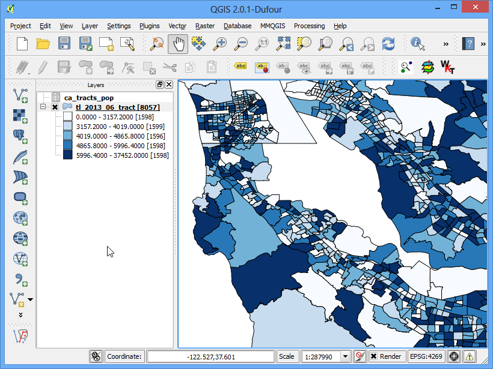
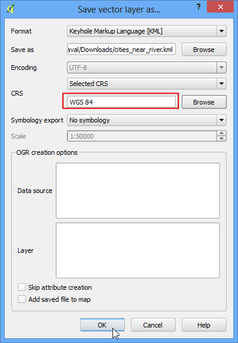

Nearest Neighbor Analysis
[ Download PDF
A4
Letter ]
Τα GIS είναι πολύ χρήσιμα στην ανάλυση χωρικών σχέσεων μεταξύ χαρακτηριστικών. Μια τέτοια ανάλυση είναι η εύρεση ποια χαρακτηριστικά βρίσκονται πλησιέστερα σε ένα δεδομένο χαρακτηριστικό. Το QGIS έχει ένα εργαλείο το οποίο ονομάζεται Distance Matrix το οποίο βοηθάει σε μια τέτοια ανάλυση. Σε αυτό το tutorial, θα χρησιμοποιήσουμε 2 σύνολα δεδομένων και θα βρούμε ποια σημεία από το ένα στρώμα είναι πιο κοντά σε ποια σημεία του άλλου στρώματος.
Επισκόπηση του έργου
Λαμβάνοντας υπόψη τις τοποθεσίες όλων των γνωστών σημαντικών σεισμών, βρείτε το πλησιέστερο πυκνοκατοικημένο μέρος για κάθε τοποθεσία όπου συνέβη ο σεισμός.
Άλλες δεξιότητες που θα μάθετε
Πως να κάνετε ένωση πινάκων στο QGIS. ( Δείτε Εκτελώντας συγχωνεύσεις πινάκων for detailed instructions.)
Πατήστε Add rule για να προσθέσετε ένα προσαρμοσμένο στυλ για το στρώμα.
Χρησιμοποιείστε το πρόσθετο MMQGIS για να δημιουργήσετε γραμμές-κόμβους για να οπτικοποιήσετε τους πλησιέστερους γείτονες.
Διαδικασία
Ανοίξτε το και περιηγηθείτε στο μεταφορτωμένο αρχείο``signif.txt``.

Δεδομένου ότι αυτό είναι ένα tab-delimited file , επιλέξτε Tab as the File format. Το X field and Y field would be auto-populated. Κάνετε κλικ στο OK.
Note
Μπορεί να δείτε κάποια μηνύματα σφάλματος όπως το QGIS προσπαθεί να εισάγει το αρχείο. Αυτά είναι έγκυρα λάθη και μερικές γραμμές από το αρχείο δεν θα πρέπει να εισάγονται. Μπορείτε να αγνοήσετε τα σφάλματα για τους σκοπούς αυτού του tutorial.

Δεδομένου οτι το αρχείο με τους σεισμούς έχει συντεταγμένες σε Γεωγραφικό Μήκος/Πλάτος, η εισαγωγή του θα γίνει χρησιμοποιώντας το προεπιλεγμένο σύστημα “EPSG: 4326”. Μπορείτε να το επαληθεύσετε κοιτώντας στην κάτω-δεξιά γωνία του παραθύρου. Ανοίξτε επίσης το επίθεμα Populated Places. Πηγαίνετε στο .

Περιηγηθείτε στο μεταφορτωμένο αρχείο``ne_10m_populated_places_simple.zip`` και επιλέξτε Open.

Κάντε zoum και περιηγηθείτε και στα δυο σύνολα δεδομένων. Κάθε μοβ σημείο αντιπροσωπεύει την τοποθεσία ενός σημαντικού σεισμού και τα μπλε σημεία αντιπροσωπεύουν την τοποθεσία κατοικημένων περιοχών. Χρειαζόμαστε έναν τρόπο για να βρούμε το κοντινότερο σημείο από το επίπεδο με τις κατοικημένες περιοχές΄για κάθε ένα από τα σημεία στο στρώμα των σεισμών.

Πηγαίνετε στο .

Εδώ επιλέξτε το πεδίο``signif`` ως το επίθεμα εισαγωγής σημείου και τις κατοικημένες περιοχές ne_10m_populated_places_simple ως το επίθεμα-στόχος. Θα χρειαστεί επίσης να επιλέξετε ένα μοναδικό πεδίο για κάθε ένα από αυτά τα επιθέματα τα οποία καθορίζουν το πως εμφανίζονται τα αποτελέσματα σας. Σε αυτήν την ανάλυση, ψάχνουμε να βρούμε μόνο 1 πλησιέστερο σημείο, επομένως επιλέξτε το Use only the nearest(k) target points, και πληκτρολογήστε 1. Δώστε ένα όνομα στο αρχείο που θα προκύψει matrix.csv, και επιλέξτε OK.
Note
Κάτι που πρέπει να σημειωθεί είναι πως μπορείτε να πραγματοποιήσετε την ανάλυση με μόνο 1 στρώμα. Επιλέξτε το ίδιο επίπεδο σαν Input και Target. Το αποτέλεσμα θα είναι ο εγγύτερος γείτονας από το ίδιο επίπεδο αντί για ένα διαφορετικό επίπεδο όπως έχουμε χρησιμοποιήσει εδώ.

Όταν είναι έτοιμο το αρχείο σας, πατήστε το κουμπί Close στο παράθυρο διαλόγου :Distance Matrix. Μπορείτε να δείτε το αρχείο matrix.csv στο Σημειωματάριο ή σε ένα οποιοδήποτε πρόγραμμα επεξεργασίας κειμένου. Το QGIS μπορεί επίσης να ανοίξει CSV αρχεία, επομένως θα το προσθέσουμε στο QGIS και θα το δούμε εκεί. Πηγαίνετε στο .

Περιηγηθείτε στο νέο αρχείο matrix.csv που μόλις δημιουργήθηκε. Δεδομένου ότι αυτό το αρχείο είναι στήλες κειμένου, επιλέξτε No geometry (attribute only table) από το Geometry definition. Επιλέξτε OK.

Θα παρατηρήσετε ότι το CSV αρχείο έχει φορτωθεί ως πίνακας. Κάντε δεξί-κλικ στο επίπεδο του πίνακα και επιλέξτε Open Attribute Table.

Τώρα θα είστε σε θέση να δείτε τα περιεχόμενα των αποτελεσμάτων μας. Το πεδίο InputID περιέχει το όνομα του πεδίου από το στρώμα του Σεισμού. Το πεδίο TargetID περιέχει τα περιεχόμενα από το στρώμα με τις Κατοικημένες Περιοχές ήταν πλησιέστερα στο σημείο του σεισμού. Το πεδίο Distance είναι η απόσταση των 2 σημείων.
Note
Να θυμάστε ότι ο υπολογισμός της distance θα γίνει με τη χρήση του Συστήματος Αναφοράς Συντεταγμένων του στρώματος. Εδώ η απόσταση θα είναι σε μονάδες decimal degrees επειδή το στρώμα των πηγών συντεταγμένων είναι σε βαθμούς. Εάν θέλετε την απόσταση σε μέτρα, σχεδιάστε τα στρώματα ξανά πριν από την εκτέλεση του εργαλείου.

Αυτό είναι πολύ κοντά στο αποτέλεσμα που ψάχνουμε. Για ορισμένους χρήστες, αυτός ο πίνακας θα ήταν επαρκής. Ωστόσο, μπορούμε επίσης να ενσωματώσουμε αυτά τα αποτελέσματα στο αρχικό επίπεδο Σεισμού χρησιμοποιώντας το Table Join. Κάντε δεξί-κλικ στο επίπεδο σεισμού και επιλέξτε Properties.

Πηγαίνετε στην καρτέλα Joins και κάντε κλικ στο κουμπί +

Θέλουμε να ενώσουμε τα δεδομένα από τα αποτελέσματα της ανάλυσης μας σε αυτό το στρώμα. Πρέπει να επιλέξουμε ένα πεδίο από το κάθε ένα από τα στρώματα που έχει τις ίδιες τιμές. Επιλέξτε τα πεδία “matrix`` ως :guilabel:”Στρώμα για την ένωση`` και InputID ως Πεδίο για την ένωση. The Πεδίο-στόχος θα είναι I_D. Αφήστε τις υπόλοιπες επιλογές στις προεπιλεγμένες τιμές και πατήστε OK.
Θα παρατηρήσετε να εμφανίζεται η ένωση στην καρτέλα Joins tab. Κάντε κλικ στο OK.

Τώρα ανοίξτε τον πίνακα χαρακτηριστικών του στρώματος σεισμοί signif κάνοντας δεξί κλίκ και επιλέγοντας Open Attribute Table.

Θα δείτε ότι για κάθε χαρακτηριστικό Σεισμού, έχουμε ένα χαρακτηριστικό το οποίο είναι ο εγγύτερος γείτονας (πλησιέστερη κατοικημένη περιοχή) και η απόσταση από τον εγγύτερο γείτονα.

Τώρα θα εξερευνήσουμε έναν τρόπο οπτικοποίησης των αποτελεσμάτων. Αρχικά, θα πρέπει να κάνουμε την ένωση μόνιμη σώζοντας την σε νέο στρώμα. Κάντε δεξί-κλικ στο στρώμα``signif`` και επιλέξτε Save As- Αποθήκευση ως....

Πατήστε το κουμπί Browse`δίπλα στην ετικέτα :guilabel:`Save as και ονομάστε το εξαγώμενο αρχείο ως earthquake_with_places.shp. Φροντίστε το κουτί Add saved file to map`και πατήστε :guilabel:`OK.

Οταν φορτωθεί το νέο στρώμα, μπορείτε να απενεργοποιήσετε την εμφάνισή του στο στρώμα``signif``. Δεδομένου οτι η δέσμη δεδομένων μας είναι εκτενής, μπορούμε να τρέξουμε την οπτικοποίηση σε ένα υποσύνολο των δεδομένων. το QGIS έχει ένα ένδιαφέρον χαρακτηριστικό μέσω του οποίου μπορείτε να φορτώσετε ένα υποσύνολο από τα χαρατηριστικά ενός στρώματος χωρίς να χρειάζετε να γίνει εξαγωγή σε νέο στρώμα. Κάντε δεξί-κλίκ στο στρώμα earthquake_with_places και επιλέξτε Properties-Ιδιότητες.

Στην καρτέλα General-Γενικά, επιλέξτε το τμήμα Feature subset- Υποσύνολο χαρακτηριστικών. Κάντε κλίκ στο Query Builder.

Στην παρούσα άσκηση, θα οπτικοποιήσουμε τους σεισμούς και τις κοντινότερες σε αυτούς κατοικημένες περιοχές για το Μεξικό. Εισάγετε την παρακάτω έκφραση στο παράθυρο διαλόγου Query Builder

Θα δείτε οτι μόνο τα σημεία που εμφανίζονται μέσα στην περιοχή του Μεξικό είναι εμφανή στον καμβά. Ας κάνουμε το ίδιο και για το στρώμα με τις κατοικημένες περιοχές. Κάντε δεξί-κλίκ στο στρώμα``ne_10m_populated_places_simple`` και επιλέξτε Ιδιότητες `` layer and select Properties.

Ανοίξτε το παράθυρο διαλόγου:guilabel:Query Builder από την καρτέλα General. Εισάγετε την παρακάτω εντολή.

Τώρα είστε σε θέση να δημιουργήσετε την δική σας οπτικοποίηση. Θα χρησιμοποιήσουμε το πρόσθετο``MMQGIS``. Βρείτε και εγκαταστείστε το πρόσθετο. Βλέπε Χρησιμοποιώντας Πρόσθετες Λειτουργίες για περισσότερες πληροφορίες σχετικά με το πως να δουλεύετε με τα πρόσθετα. Αφού εγκαταστείσετε το πρόσθετο πηγαίνεται στο .

Επιλέξτε το ne_10m_populated_places_simple ως το Στρώμα κομβικών σημείων και``όνομα`` as the Hub ID Attribute. Ομοίως, επιλέξτε το``earthquake_with_places`` ως το Spoke Point Layer και το``matrix_Tar`` ως το Spoke Hub ID Attribute. Ο αλγόριθμος για τις κομβικές γραμμές θα περάσει μέσα από το κάθε σημείο που απεικονίζει σεισμό και θα δημιουργήσει μια γραμμή η οποί θα ενώνει το σημείο με την κατοικημένη περιοχή που ταιριάζει με την ιδιότητα που έχουμε προκαθορίσει. Κάντε κλίκ στο Browse και ονομάστε το Output Shapefile ως``earthquake_hub_lines.shp``. Κάντε κλίκ στο OK για να ξεκινήσετε την επεξεργασία.

Η επεξεργασία μπορεί να πάρει μερικά λεπτά. μπορείτε να δείτε την πρόοδο στην κάτω-αριστερή γωνιά του παραθύρου του QGIS.

Μόλις η επεξεργασία είναι έτοιμη, θα δείτε το στρώμα earthquake_hub_lines φορτωμένο στο QGIS. Μπορείτε να δείτε ότι το κάθε σημείο που απεικονίζει σεισμό είναι τώρα συνδεδεμένο με την κοντινότερη κατοικημένη περιοχή με μία γραμμή.